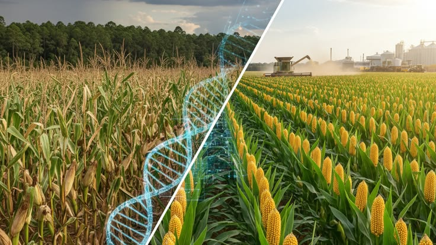
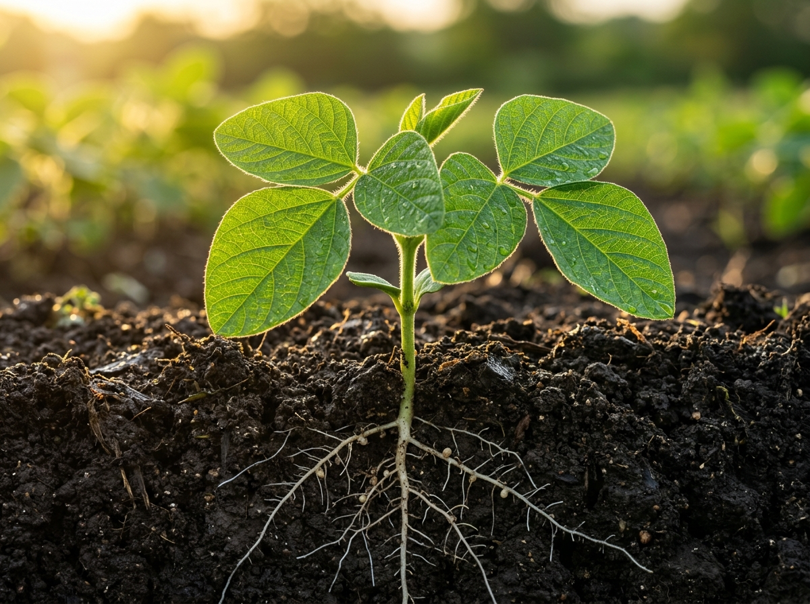
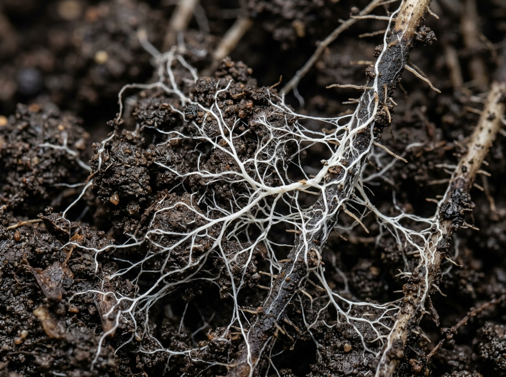
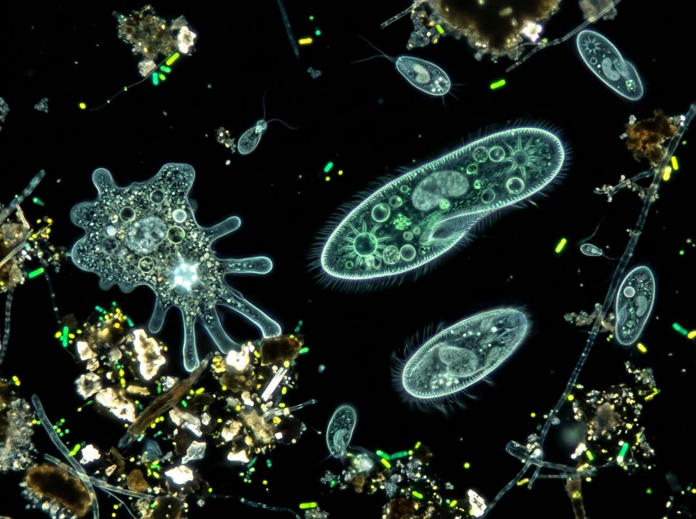
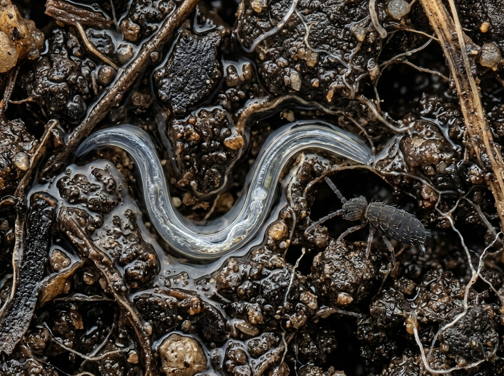
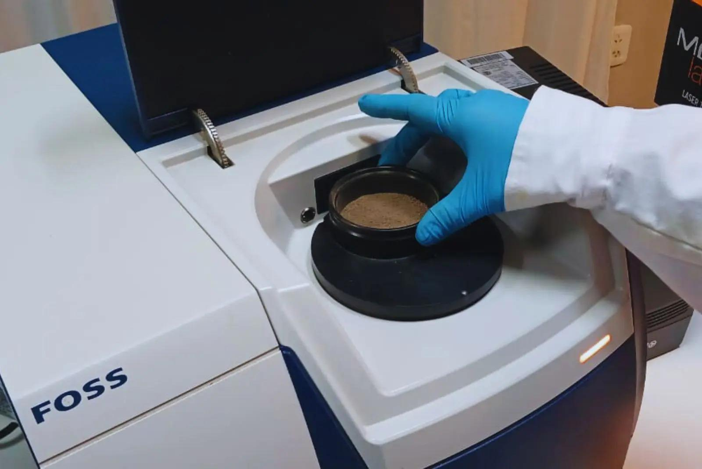
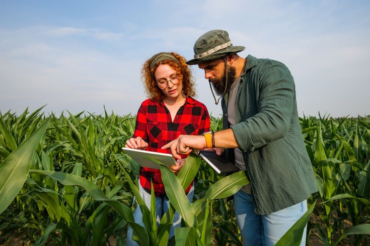
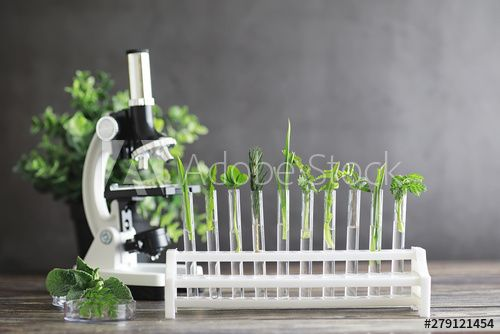

16S & ITS Metagenomics
Amplicon sequencing identifying bacterial families and mycorrhizal species native to regional soils.
Quantifying fungal hyphae diameters, bacterial biomass densities, and nematode morphology at 400x optical magnification.
Biological mineralization occurs when secondary predators consume microbial bodies, delivering ionic nutrients directly to roots.




Direct elemental carbon quantification combining 950°C Dumas combustion with spectral reflectance libraries.

Deploying DNA sequencing and stratified subsoil sampling to map complete functional microbiology.

Amplicon sequencing identifying bacterial families and mycorrhizal species native to regional soils.

Hydraulic coring measuring organic matter persistence across 0-30cm, 30-60cm, and 60-100cm horizons.

Direct counting measuring organism motility, flagellate swimming, and fungal strand diameter.
Receive optical microscopy assays, functional biological indices, and tailored transition blueprints.